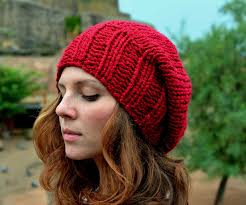

| Red Line Hat |  | The Red Line Hat is beautiful peice hand knit is pacific North West. Made from 100% marino wool, it will keep you warm through the regions cold damp winters. |
| Cowled Sweater |

|
Windy days be warned, the cowled sweater is here. The 100% marino wool sweater features an extra large hood with fashionable two button collar. |